Developing digital biomarkers to monitor neurological changes during treatment and follow-up, and support earlier recognition of injury and disease.
AIris will build patient-empowered tools that turn everyday visual data contributed by patients and families into meaningful longitudinal insights for clinical care.
Based in Switzerland. Built around patients. Designed for impact.
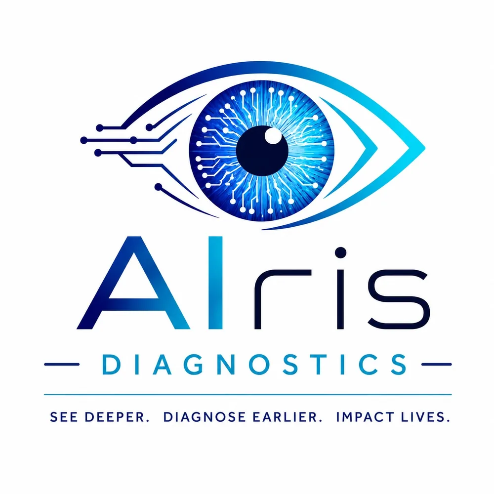
“I founded AIris Diagnostics because I believe no one should lose their life because a disease was discovered too late.”
Dr. Javad Nazarian Founder & CEO
PATIENTS AND FAMILIES FIRST
Patients and families help shape what we study, how we design participation and how we evaluate AIris.
EVIDENCE BEFORE PROMISES
Reproducibility and clinical relevance guide our development.
RESPONSIBLE BY DESIGN
Consent, privacy and trust are central to our approach to visual data.
POTENTIAL IMPACT FOR PATIENTS AND CARE TEAMS
More consistent measurements. More informed follow-up.
Developing objective visual measurements to support timely assessment, longitudinal monitoring and more accessible specialist care.
01
Standardize response measurements
Quantify facial, ocular and movement changes using repeatable measures across observations. To evaluate: technical reliability, agreement with clinical assessments and usefulness in following response to therapy.
02
Follow the individual
Compare observations over time to help clinicians understand neurological function, treatment-related changes and recovery or deterioration.
03
Bring monitoring closer
Familiar devices could support clinician-linked monitoring at home, including for families far from specialist centers, with fewer journeys where clinically appropriate.
04
Use resources wisely
Better longitudinal information could help care teams prioritize review and reduce avoidable visits. Economic evaluation will count both potential savings and extra investigations.
05
Strengthen clinical research
Structured measurements could complement imaging, clinical examinations and patient-reported information in studies of treatment and neurological outcomes.
OUR EVIDENCE STANDARD
Potential must become evidence.
AIris seeks to demonstrate whether its tools can support earlier diagnosis and help reduce healthcare costs. Whether earlier diagnosis can improve outcomes depends on the condition and access to effective care.
AIris will test whether repeated visual measurements can capture clinically meaningful change during treatment and follow up. Earlier detection is an additional research goal.
OUR TEAM
Collective leadership. A shared purpose.
Scientific leadership, clinical insight, AI expertise and patient advocacy, brought together by one mission.
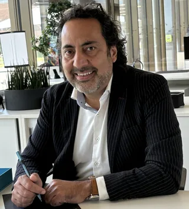
Dr. Javad Nazarian
Founder & CEO
Dr. Nazarian has authored more than 130 scientific publications, established one of the world’s largest research infrastructures for diffuse midline glioma (DMG), and led international collaborations spanning North America, Europe and Asia.
His work has contributed to the development of novel biomarkers, liquid biopsy technologies and innovative therapeutic strategies for life-threatening diseases. As Founder and Chief Executive Officer of AIris Diagnostics, Dr. Nazarian is leading the development of a next-generation multimodal diagnostic intelligence platform that integrates facial, ocular, physiologic and behavioral biomarkers with advanced artificial intelligence. His vision is to transform ordinary images and digital signals into clinically meaningful insights that enable earlier disease detection, personalized monitoring and improved outcomes.
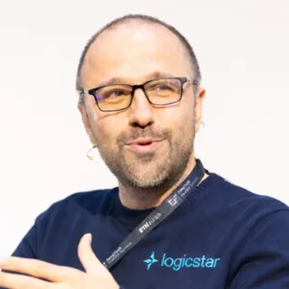
Boris Paskalev
Strategic Advisor and Patient Advocate
Boris Paskalev is a serial entrepreneur, AI technology leader and product strategist with more than 20 years of experience building and scaling deep technology companies.
He is the co-founder and former CEO of DeepCode, an AI software company acquired by Snyk, and currently leads LogicStar AI. A graduate of the Massachusetts Institute of Technology (MIT), Boris advises AIris on AI platform architecture, product strategy, commercialization and the translation of cutting-edge artificial intelligence into scalable, real-world healthcare solutions.
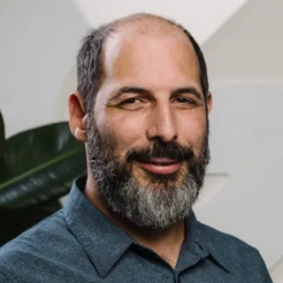
Dr. Horesh Ben Shitrit
Computer Vision & Technology Development
Horesh Ben Shitrit is an EPFL-trained computer-vision scientist and technology entrepreneur with a PhD in computer vision. He founded PlayfulVision and has led engineering and AI teams developing production-grade technology.
At AIris, Horesh leads technical architecture, image and video processing, multimodal integration and development of the scalable platform, connecting research methods with practical tools for clinical and research users.
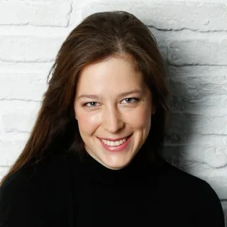
Prof. Dr. Sarah Brüningk
Biomedical AI & Quantitative Modeling
Sarah Brüningk is an Assistant Professor at the University of Bern’s Center for AI in Radiation Oncology. Her research combines machine learning and mechanistic mathematical modeling to investigate imaging and molecular biomarkers of treatment response, including in pediatric brain tumors.
She previously led pediatric oncology applications at ETH Zürich and holds a PhD from The Institute of Cancer Research in London. Sarah brings expertise in biomedical AI, multimodal data analysis and quantitative modeling to AIris’s research collaboration.
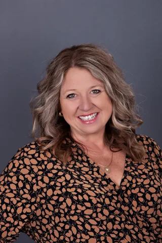
Lisa Ward
Advisor and Patient Advocate
Lisa Ward is a childhood brain cancer advocate and co-founder and president of the Tough2gether Foundation. She brings the perspectives of patients and families affected by diffuse intrinsic pontine glioma (DIPG) to AIris.
Lisa became an advocate after her son, Jace Ward, was diagnosed with DIPG. Jace became a powerful voice for people affected by the disease. Together, Lisa and Jace conceived and helped launch a U.S. national nurse navigation system and the DIPG DMG National Brain Tumor Board. Lisa continues to challenge established approaches to care and research to change the trajectory of the disease for children and families.
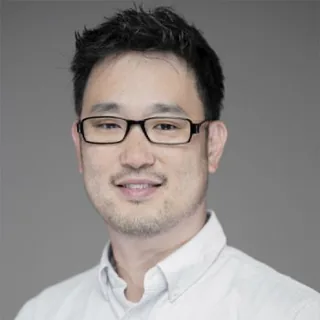
Dr. Eugene Hwang, MD
Clinical Advisor
Eugene (Gene) Hwang, M.D., is Chief of Oncology at Children’s National Hospital, where he treats children with brain tumors. He has developed and led novel early-phase therapeutic trials, with a focus on immunotherapy.
Dr. Hwang also leads clinical trials focused on gene therapy and new, targeted agents. He serves on grant review committees and scientific advisory boards of several large foundations. For each patient, Dr. Hwang carefully considers the best possible treatment options, combining new approaches with the best available known therapies.
Prof. Tobey MacDonald, MD
Clinical Advisor
Tobey J. MacDonald, MD, is Professor in the Department of Pediatrics at Emory University School of Medicine and Director of the Pediatric Neuro-Oncology Program at the Aflac Cancer and Blood Disorders Center.
Dr. MacDonald is board certified in pediatrics and pediatric hematology and oncology by the American Board of Pediatrics, and is a member of the Cell and Molecular Biology Research Program at Winship Cancer Institute. He received his medical degree from Cornell University, then completed a residency in pediatrics and fellowships in pediatric hematology and oncology, and pediatric neuro-oncology at Children’s Hospital Los Angeles.
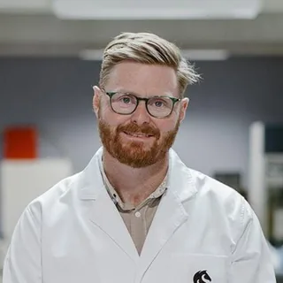
Prof. Dr. Matt Dun OAM
SCIENTIFIC ADVISOR
Matt Dun is Professor of Paediatric Haematology and Oncology Research and holds the Bill & Iris Burges Professorial Chair in Medical Science at the University of Newcastle. He is Director of the Centre for Translational Neuro-Oncology, Director of Brain Cancer Research at HMRI, and Paediatric Stream Lead at the Mark Hughes Foundation Centre for Brain Cancer Research.
His work is driven by the belief that discoveries in the laboratory should ultimately make a meaningful difference for children and families affected by brain cancer. His research focuses on translating advances in DIPG, DMG, HGG, ATRT and other childhood brain cancers into clinical benefit.
He brings expertise in pediatric cancer biology, translational research and international clinical-trial collaboration. He is also the founder of RUN DIPG, which supports research and works toward better outcomes for children with these devastating tumors.
OUR TECHNOLOGY
A closer look. A longer view.
Developing AI that transforms photographs and videos into quantitative information about neurological change.
HOW AIRIS WOULD WORK
Measure the same person over time.
A digital biomarker is a quantified feature derived from digital data. For AIris, candidate measures include facial symmetry and movement, eye position and gaze, and motor function. A visual change alone is not a diagnosis.
Capture
Consent-based photographs, videos and relevant clinical time points.
Check and measure
Quality checks, normalization and extraction of facial, ocular and movement features.
Compare
Track candidate digital biomarkers against the person’s baseline, accounting for age, growth, pose and recording conditions.
Review clinically
Display trajectories for comparison with examinations, treatment history and imaging.
INITIAL USE AND LONGER-TERM VISION
Monitor change. Build toward earlier recognition.
Discover, validate and implement digital biomarkers of neurological change, beginning within clinician-led care and research.
INITIAL FOCUS
After a neurological insult or diagnosis
Measure function over time in patients with an established condition. Start with pediatric brain tumors, prioritizing DIPG/DMG, to investigate standardized biomarkers of response to therapy.
KNOWN PREDISPOSITION
Follow people at increased risk
Develop longitudinal research in defined at-risk populations, with NF1 as the priority genetic-predisposition use case. Familial and relevant environmental risk groups could be considered in future studies.
LONGER-TERM RESEARCH
Investigate sporadic disease manifestation
Explore whether changes from an individual’s baseline could help flag previously unrecognized neurological disease in people without a known predisposition.
DIPG / DMG
A clear clinical starting point
Brainstem disease can affect facial movement, eye movements and motor function. AIris will test whether repeated visual measurements can capture clinically meaningful change during treatment and follow-up.
NF1 / NEUROFIBROMATOSIS TYPE 1
A known-risk population to follow over time
NF1 increases the risk of optic pathway gliomas, plexiform neurofibromas and other complications. Repeated facial, ocular and movement recordings could establish each child’s trajectory and help investigate deviations from baseline.
Candidate digital biomarkers would be compared with ophthalmology, neurological assessment, clinically indicated MRI and outcomes. NF1 does not mean that every child develops a tumor.
Beyond its initial DIPG/DMG and NF1 research focus, AIris could investigate digital biomarkers in these areas. The graphic illustrates potential research directions.
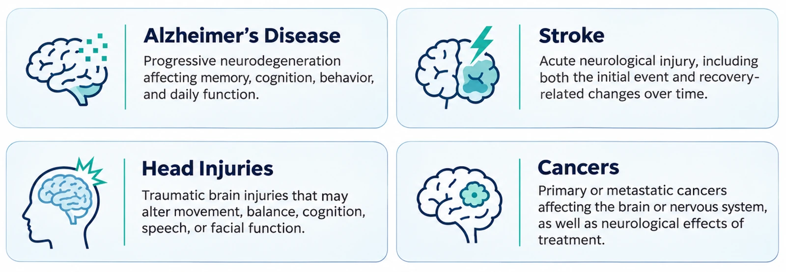
PUBLISHED RESEARCH THAT MOTIVATES THE WORK
Observable change. A measurable research question.
Published treatment studies show that facial and motor function can change with disease and treatment. AIris asks whether computer vision can turn these observations into reliable longitudinal digital biomarkers.
Published DMG observations document changes in facial strength after GD2 CAR-T therapy.
Excerpt from Fig. 1f, Majzner et al., Nature (2022). These are published treatment observations, not AIris output.
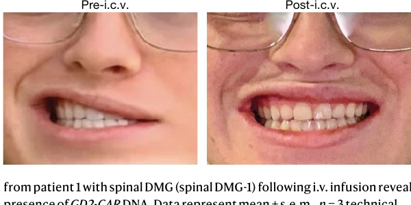
Motor function during treatment
The same study reports changes in hand function following treatment.
Excerpt from Fig. 2b, Majzner et al., Nature (2022). These are published treatment observations, not AIris output.
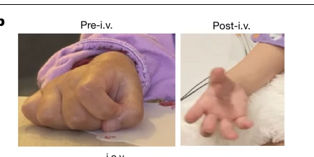
Earlier detection: additional published context
Lower tumor burden in incidental low-grade glioma
Ius and colleagues studied 267 surgically treated patients with incidental low-grade glioma across four centers. Lower preoperative tumor volume was associated with greater resection and longer survival. This retrospective adult low-grade glioma evidence does not establish a survival benefit for AIris, NF1 screening or DIPG/DMG detection.
Illustrative schematic, not individual patient data or the published study plot. The association statistic is reported from Ius et al., Neuro-Oncology (2022). Axes show schematic scales; the drawn points and trend line do not reproduce the study dataset.
One research approach. Several clinical questions.
Clinical trials
Investigate digital endpoints for treatment response and adverse effects, complementing imaging and clinician-rated measures.
Neuro-oncology
Follow facial, ocular and motor change during treatment and follow-up.
Neurology
Study visible functional change in selected neurological conditions, including potential adult applications.
Rehabilitation
Explore recovery tracking after stroke, facial nerve injury or neuromuscular impairment.
Telemedicine
Enrich remote review with structured visual observations, including for people distant from specialist care.
Rare diseases
Support longitudinal phenotyping in small, geographically dispersed research populations.
PARTNERS
A focused beginning. A shared opportunity.
We seek partnerships that connect clinical expertise, rigorous research and patient and family experience to develop meaningful digital biomarkers of neurological change.
CLINICAL PARTNERS
Hospitals and specialist centers
Help define clinical priorities, assess monitoring workflows and evaluate repeated visual measurements alongside treatment and follow-up information.
RESEARCH PARTNERS
Academic teams and trial sponsors
Collaborate on biomarker methods, longitudinal studies and validation, with clear agreements on responsibilities, data access and research use.
PATIENT AND FAMILY PARTNERS
Communities and advocacy organizations
Help shape research priorities, participation design and accessible communication. Recruitment and data collection require separately agreed resources, consent and governance.
PROPOSED GEOGRAPHIC COVERAGE
Switzerland and the EU
A Swiss base for development, with potential European clinical and research collaboration.
United States
Potential collaboration with specialist centers, research teams and patient and family organizations.
Australia
Potential research and family-engagement partnerships, with responsibilities and resources agreed locally.
Further regions
Additional collaborations guided by clinical relevance, local capacity and readiness.
JOIN OUR MISSION
Help turn possibility into progress.
We welcome conversations with foundations, investors, researchers and patient advocates who share our ambition.
FOUNDATIONS & PHILANTHROPY
Enable the next research milestone.
Discuss support for patient-centered research, biomarker development and rigorous evaluation.
INVESTORS & STRATEGIC PARTNERS
Build a sustainable path to impact.
Explore AIris’s development strategy, intended applications and longer-term opportunity.
CLINICAL & RESEARCH COLLABORATORS
Generate evidence. Advance understanding.
Connect around clinical needs, research methods and future validation opportunities.
For general and partnership inquiries. Please do not send patient images or sensitive health information. Research participation would require a separate, appropriately governed process.